MeWGic PART 15E
4 Kasım 2026 · Unity 6000.3.27f1 · Başlangıç 90964ef
Mevcut ada adları, kayıt kimlikleri ve bölüm aralıkları korunuyor. İstenen temalar sırayla, mevcut adaların oynanabilir bölüm detaylarına uygulandı. Kristal Şelaleler’in PART 15B çizimleri ve PART 15D kedi hareketi kullanılıyor. Dünya haritasındaki onaylı ada siluetleri kendi mevcut sanatını kullanmaya devam ediyor.
12 gerçek Unity Game View görüntüsü
900×1600 Play Mode. Kareleri tıklayarak tam boyutunu açabilirsin.
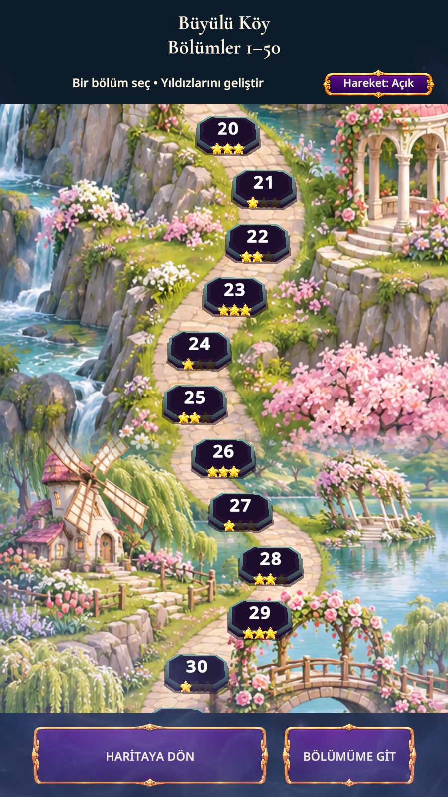
1. Büyülü Köy
Büyülü Başlangıç · 1–50
Pembe-yeşil bahçeler, kır evleri ve küçük şelaleler
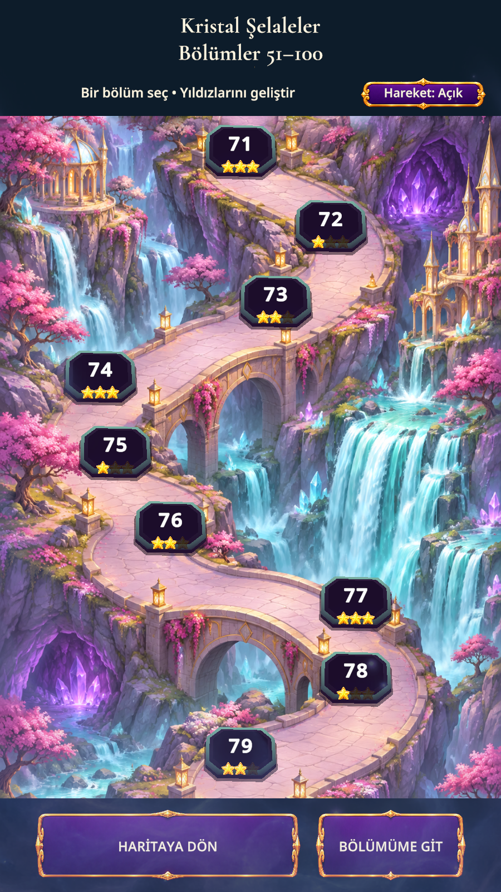
2. Kristal Şelaleler
Kristal Şelaleler · 51–100
Turkuaz şelaleler, kristaller ve mevcut taş köprüler
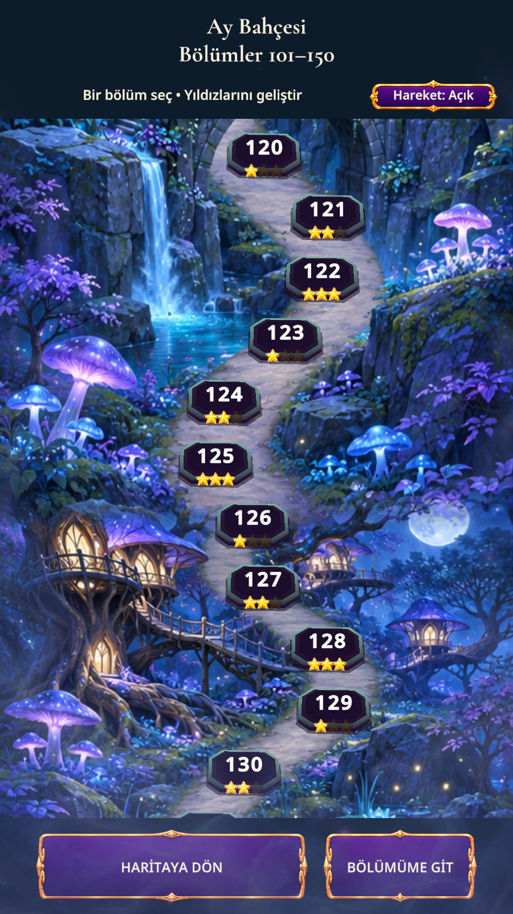
3. Ay Bahçesi
Ayışığı Ormanı · 101–150
Lacivert gece, parlak mantarlar ve ateş böcekleri
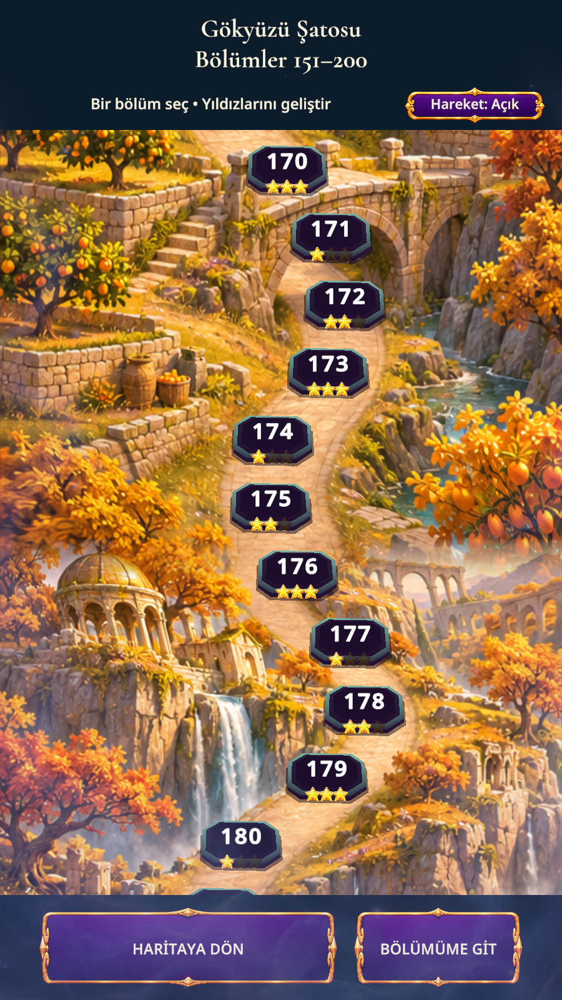
4. Gökyüzü Şatosu
Altın Vadisi · 151–200
Kehribar ağaçlar, sıcak taş ve harabeler
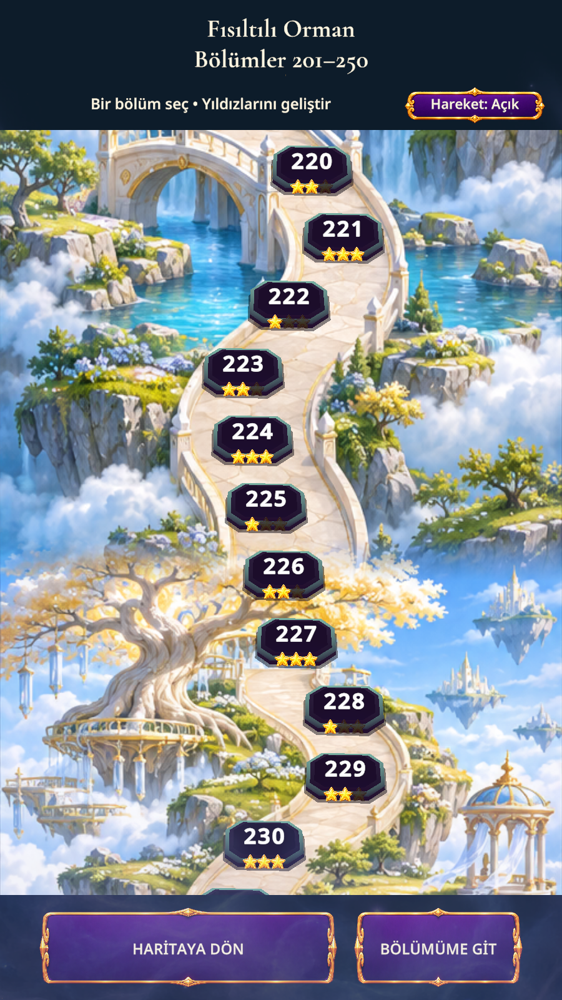
5. Fısıltılı Orman
Bulut Krallığı · 201–250
Beyaz bulut geçitleri, gök pavyonları ve uçan adalar
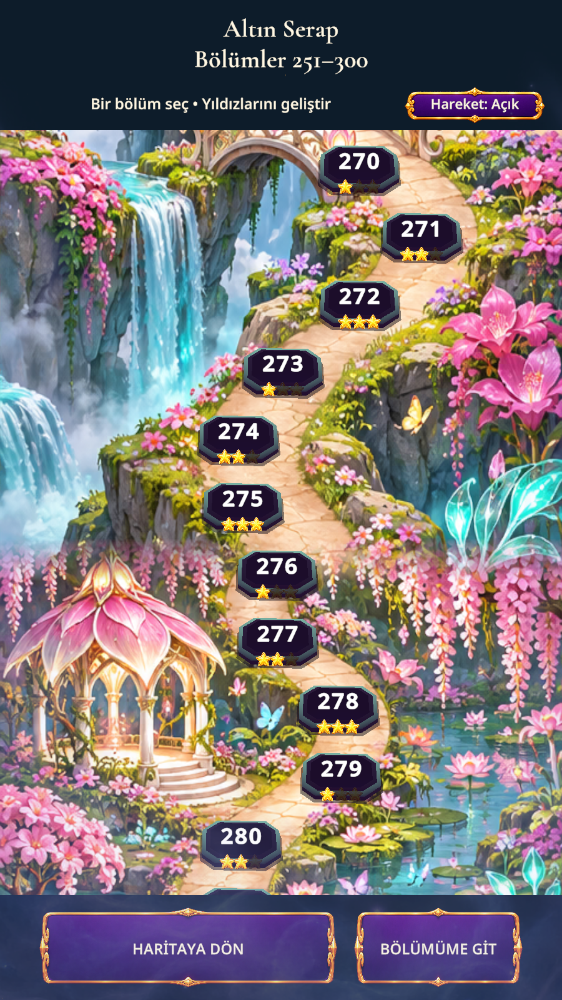
6. Altın Serap
Peri Bahçeleri · 251–300
Dev çiçekler, kelebekler ve çiçekli kemerler
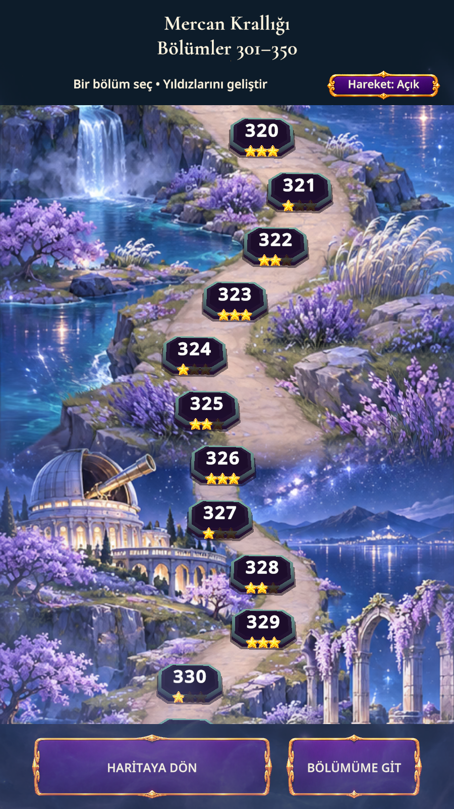
7. Mercan Krallığı
Yıldız Gölü · 301–350
Yıldız yansımaları, gece gölü ve gözlemevleri
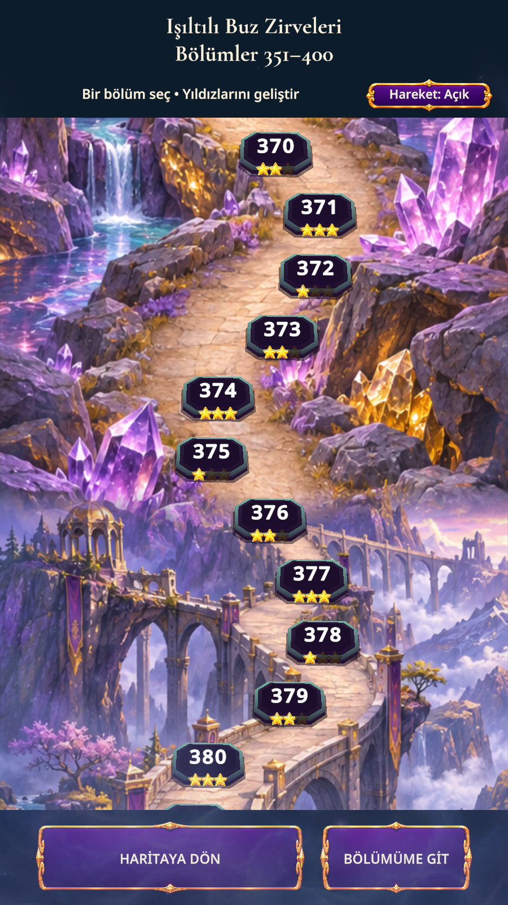
8. Işıltılı Buz Zirveleri
Ejderha Dağları · 351–400
Ejderha, dik zirveler, eski kaleler ve kristal mağaraları
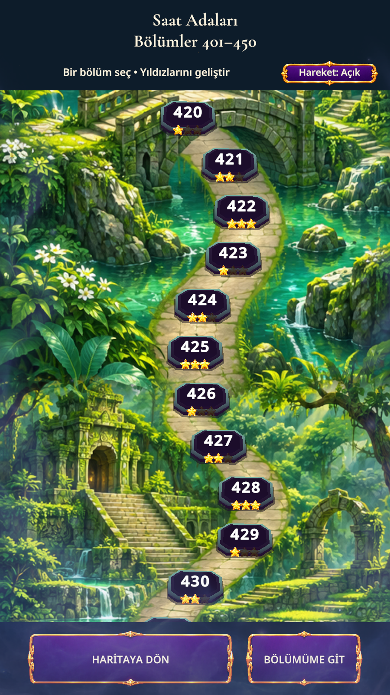
9. Saat Adaları
Zümrüt Ormanı · 401–450
Yosunlu yollar, yeşil şelaleler ve gizli tapınaklar
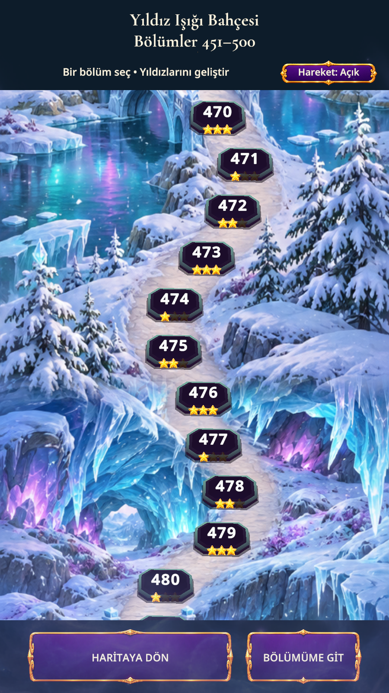
10. Yıldız Işığı Bahçesi
Kuzey Işıkları · 451–500
Buz köprüleri, kar ve renkli aurora
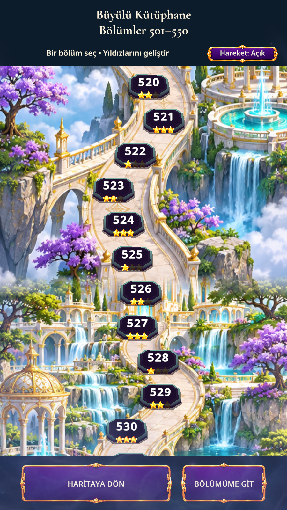
11. Büyülü Kütüphane
Göksel Saray · 501–550
Altın kuleler, mermer yollar ve çeşmeler
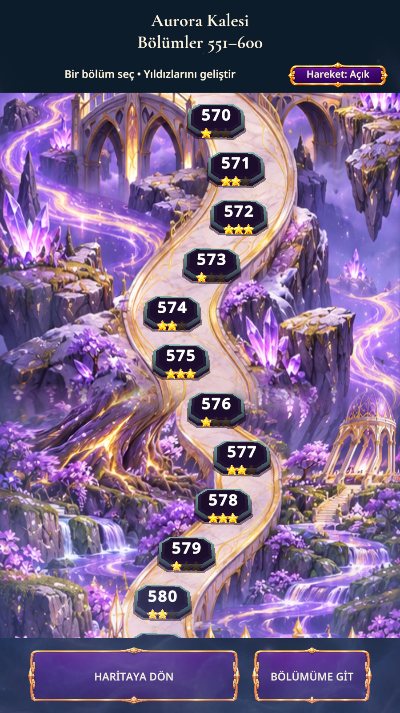
12. Aurora Kalesi
Sonsuz Büyü Diyarı · 551–600
Mor-altın kaleler, yıldızlar ve büyülü enerjiUygulama ve sınırlar
- On bir yeni atlasın her biri dört ayrı çizim içeriyor. Yol merkezleri çizim üzerinden ölçüldü. Kedi ve dokunulabilir taşlar aynı rotayı kullanıyor. Teras ağızları hafif UV hizalama ve geçiş bandıyla birleşiyor. Bazı çevre dikişleri kaydırırken görülebiliyor.
- Ada başına 50 bölüm ve mevcut taş havuzu kullanılıyor. Yeni detaylardan yalnızca açık adanın atlası yükleniyor. Ada kapanınca veya değişince atlas bırakılıyor. Android ve iPhone import ayarları ASTC 5×5. Fiziksel cihaz FPS, GPU, RAM ve termal ölçümü yapılmadı.
- İlk ada geçişinde mevcut kayıt defteri ve kutlama işareti kullanılıyor. Kısa perde, yumuşak kamera hareketi, kedi girişi, ada adı ve PART 15D varış ışıkları birlikte çalışıyor. Az hareket tercihi kamera gösterisini atlıyor.
- 12 ada detayı için eksik atlas yok. 601 ve sonrası önceki prosedürel rota sunumuyla devam ediyor. Yeni overview siluetleri veya 601 sonrası yeni sanat üretilmedi.
101 girişinde ada adı ve geçiş · Atlas üretim promptları
Doğrulama ve dosyalar
Unity Play Mode · 4.067 kontrol ve harita regresyonu · 11.382 kontrol. Hata veya uyarı kaydedilmedi. 900×1600 taramasında en fazla 15 taş etkindi. 12×50 taş, mevcut yıldız ve kilit verileri, her adada raycast, atlas bırakma, 900×1600 / 1950 / 2000 portre kontrolleri, ada açılışları ve tek seferlik kutlama sınandı. 601 gerçek üretici üzerinden hazırlandı. Oyuncu kayıtları ayrı QA profiliyle korundu. İlk denetimde ScrollRect güncellemesi tamamlanmadan sonraki örnek alınıyordu. Bekleme düzeltildi ve tüm denetim yeniden çalıştırıldı.
Assets/Resources/Map/Journeys atlasları ve import ayarlarını içeriyor. MapWorldThemedJourney.cs yükleme ve terasları, ThemedPath.cs yol noktalarını, MapWorldJourney.cs taş entegrasyonunu ve MapWorldJourneyMotion.cs ada açılışını yönetiyor. Part15EWorldsProbe.cs yeniden çalıştırılabilir Editor denetimi. Üretim sahnesi, kayıt şeması ve üretici algoritması aynı kaldı.